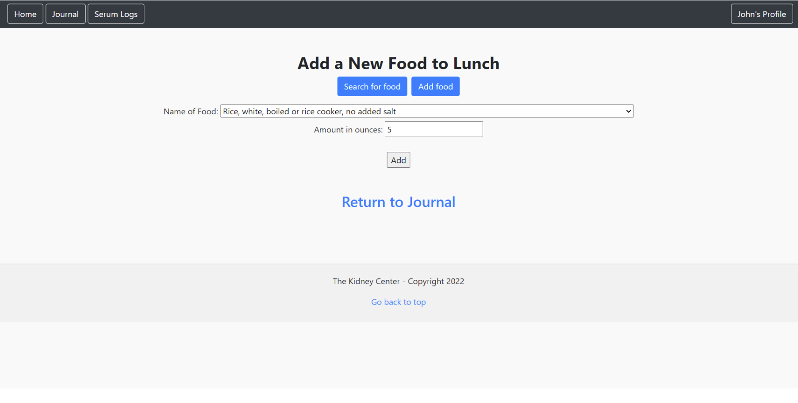
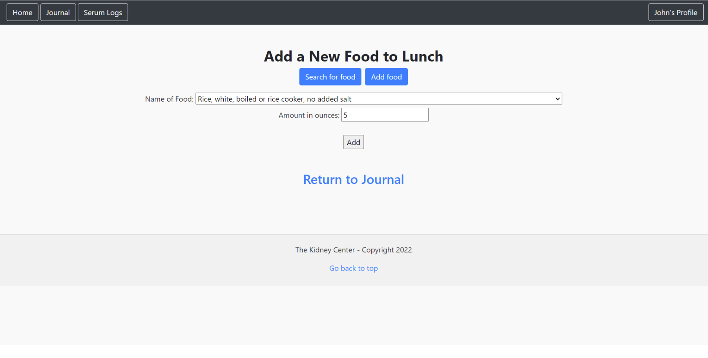

I'm Bruyn [Broo-in] Decker, currently navigating the first year of my Masters in Information Systems Management at BYU's Marriott School of Business.
I believe that well-designed technology systems are the pathway to a better world.
I'm trying my best to contribute to the well-designed part. To me, a big piece of that is analyzing data so you can make quality decisions.
Here's the living record of my commitment to impactful tech.
Testimonials
-
Riley Marshall
Bruyn is a fearless leader and has shown time and time again both inside and outside the classroom what he is capable of!
-

Sarah Smith
The Masters program is lucky to have him!
-
Grant Lewis
Bruyn is smart and thoughtful. He is very good at working with others and is good at managing several tasks at once.


Organizations I've Worked With


Projects I've worked on
AI-Illustrated Novel
.png)
.png)
.png)
In a fusion of literature and cutting-edge technology, I embarked on a personal project to breathe visual life into a novel I had penned.
Leveraging the power of AI, both through language models and image generation tools, I crafted a workflow that transformed my written words into a visually stunning, professional-level book.
This project wasn't just about creating pictures; it was an exploration into the synergy between human creativity and artificial intelligence. I delved into the realms of graphic design, utilizing AI text-based tools to visualize the essence of my narrative. These images served to deepen the reader's engagement with the story.
The endeavor highlighted my ability to harness LLMs (Large Language Models) and AI image generators in novel ways, pushing the boundaries of traditional storytelling. It was a journey that showcased my skills in raw creativity, graphic design, and my adeptness at integrating complex technologies to achieve a singular, artistic vision.
This project stands as a testament to the innovative use of technology in enhancing and redefining the creative process, offering a glimpse into the potential futures of digital storytelling and publishing.
Amazon Web Services Project
This school project tasked us with creating a web application capable of listing a diverse range of items - from donuts to favorite video game characters - all dynamically pulled from a database. The challenge was to envision an application that could scale to meet the needs of 31,000 retail locations, each with its unique inventory needs.
Our approach involved a deep dive into cloud computing and microservices architecture, leveraging Docker for containerization to ensure scalability and ease of updates. We utilized AWS Fargate for running our containers, ensuring our application could handle the demands of a potentially vast retail network without direct server management.
For our database solution, we opted for Amazon RDS, allowing us to manage data effectively and scale our storage capabilities as needed. Additionally, we explored the use of DynamoDB for its NoSQL benefits, enhancing our application's performance and scalability.
To ensure the application's infrastructure was robust and maintainable, we adopted Infrastructure as Code practices, creating a system that could be easily updated and scaled. The use of AWS CloudFormation and CodePipeline further streamlined our deployment and update processes, ensuring our application could evolve smoothly alongside the business needs.
Understanding the importance of user experience, we hosted our web assets in an S3 bucket with CloudFront distribution, significantly improving the application's load times and reliability for users worldwide. The implementation of API Gateway also facilitated a microservices architecture, enabling efficient data retrieval and manipulation.
This project not only showcased our technical prowess but also our ability to think strategically about the future of e-commerce platforms. It reinforced our understanding of cloud-based architectures, containerization, and the critical importance of scalability and maintainability in software development.
Agreement Periods Admin Project
As a Full-stack C# Developer at BYU Campus Accommodations in Provo, UT I enabled the transition of systems from Visual Basic to a modern tech stack involving ASP.NET, Entity Framework, and Oracle SQL. This helped drive $40 Million dollars in annual revenue collected by Campus Accommodations.
The main project I worked on as part of this as a solo developer was an app in which I developed a web application for admin use, demonstrated in the video above. This project comprised over 6000 lines of code.
INTEX 2023
Our full report | Link to our code repository
Our team successfully conducted an in-depth statistical analysis of Ancient Egyptian gravesite data, employing advanced analytical techniques to derive valuable insights.
We designed and developed a secure and user-friendly website that served as a hub for the data collected. This platform enabled researchers and the public to access, filter, and interact with the data, enhancing its accessibility and usability.
Utilizing our expertise, we implemented a robust authentication system that allowed authenticated researchers to contribute new findings, as well as edit and delete existing records on the website.
One of our key achievements was the development of a dynamic Burial Summary page, which allowed users to view mummy information in a digestible format. The page supported filtering on up to 10 columns, meeting the specific requirements outlined by the client.
In addition to data organization and website development, our project featured advanced analytical components. We employed both supervised and unsupervised analysis techniques. Our "supervised" analysis resulted in a model capable of predicting mummy sex based on burial characteristics. Meanwhile, the "unsupervised" analysis revealed statistically significant correlations within the dataset.
INTEX 2023 showcased our ability to leverage cutting-edge technologies, including .NET programming, PostgreSQL, Amazon Web Services, and data visualization tools. Our achievements in this project stand as a testament to our expertise in data analytics, web development, and technical problem-solving.
INTEX 2022
Our full report | Link to our code repository
Was part of a team in which we designed a relational database, deployed it using Django and PostgreSQL, and visualized the data dynamically on a webpage to help kidney patients track health information.
 

SAnD 2022 (Systems Analysis and Design)
We analyzed a real-world business problem with an information system and proposed feasible business solutions. We proposed a solution to problems with BYU on-campus housing's incident reporting system. To complete this project I had to have a robust understanding of analysis and design processes, requirements elicitation, database design principles, and UML.
Principles of Business Programming- Final Project
Source Code for our web app on GitHub
For our final project we built a website that implemented CRUD (create, read, update, and delete) operations on a PostgreSQL database deployed to railway. The website was built using Python/Django along with HTML/CSS. This project required knowledge of principles of both front-end and back-end development. Our project recieved the highest grade in the class!
Tableau Data Analysis
An early work of Data Analysis I did for an introductory class.
This demonstrates an emphasis on visualizing data so it can be better understood and used to make decisions.